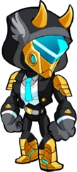
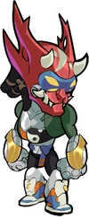
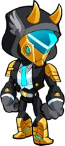
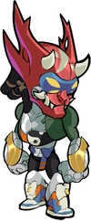

O Estranho Misterioso
Um enigma envolto em um enigma envolto em armadura de batalha Ivaldic. Aqui ele é chamado Orion.


Observando das portas de Valhalla, Bödvar, Cassidy e as outras lendas viram um rastro ardente de fumaça cortando o céu de Asgard. Atrás do cometa de fogo, uma Valquíria correu em sua perseguição, como se tentasse parar a bola de fogo enquanto ela mergulhava nos campos de Folkvangr em uma gota de terra e chamas. As lendas então observaram Valquírias e emissários de Odin reunidos ao redor da cratera fumegante. Semanas depois, os Filhos de Ivaldi, os mesmos anões ferreiros que forjaram a lança de Odin, apareceram discretamente em Asgard. Eles usavam uma deslumbrante armadura dourada e a apresentavam aos próprios deuses. Logo depois, o poderoso Orion juntou-se aos salões de festas de Valhalla. Tentativa e indiferente no início, Orion logo se aqueceu para o grande salão e agora está entre seus maiores guerreiros e campeões mais populares. Orion não fala de seu passado, e outras lendas podem apenas especular. Mas as Valquírias param em seus aposentos para perguntar se ele quer, "você sabe, sair ou o que quer que seja, não é grande coisa". Ele é o único herói que deixa Asgard de vez em quando.
 


